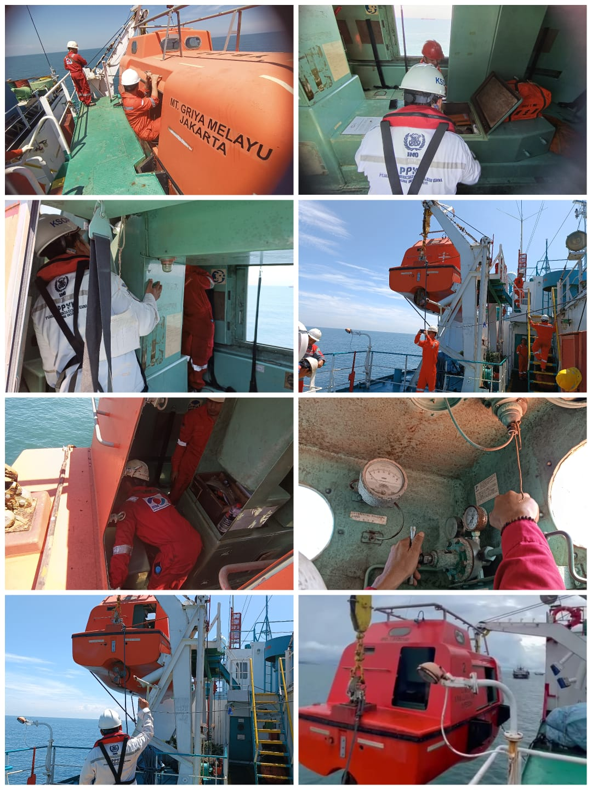
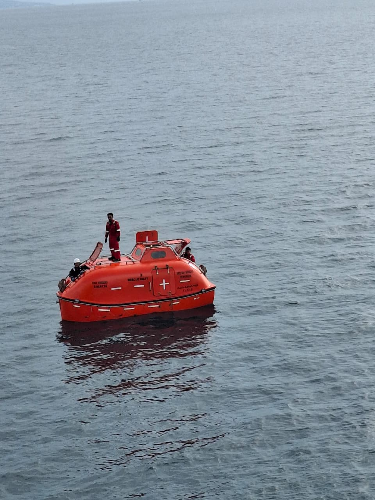
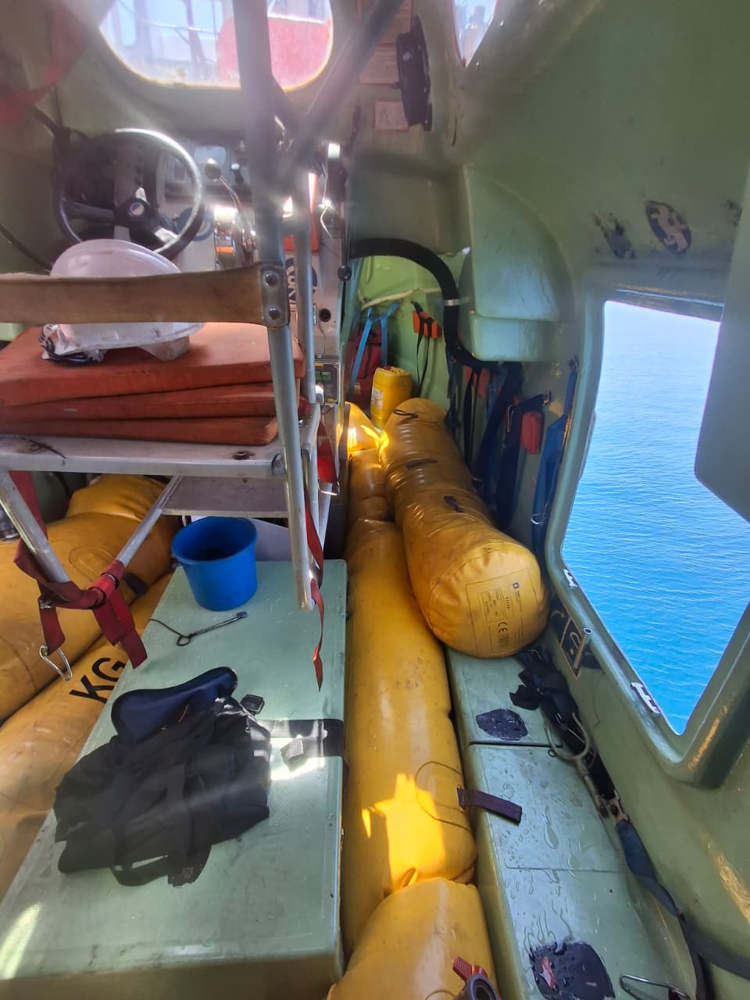
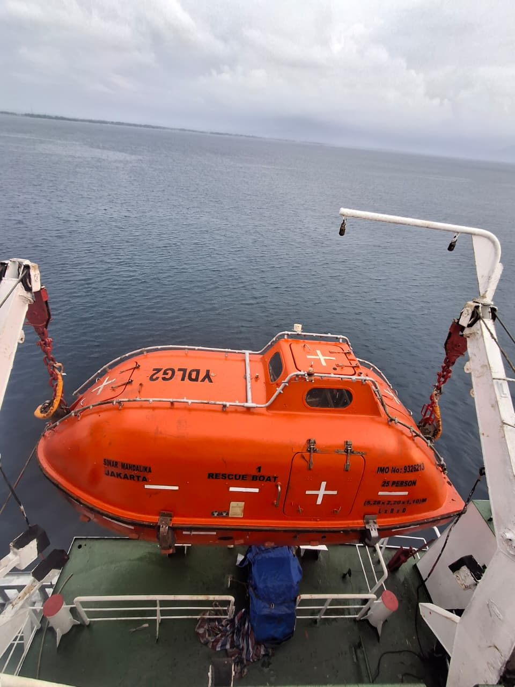
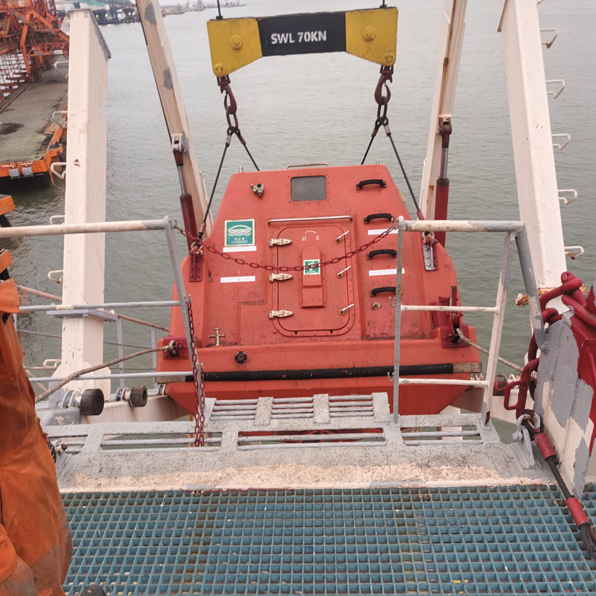
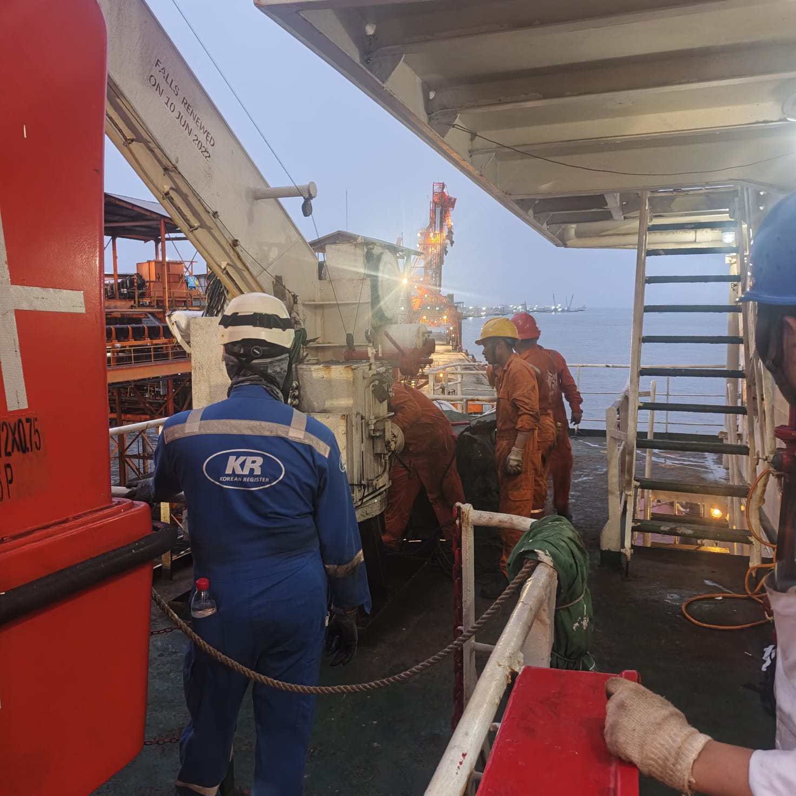
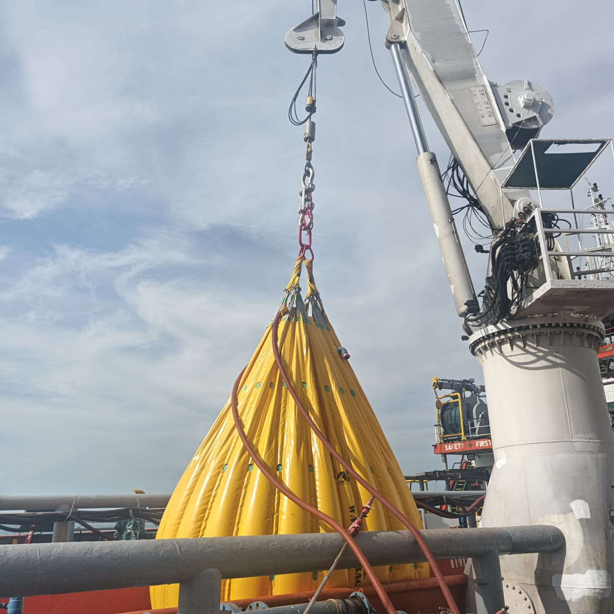
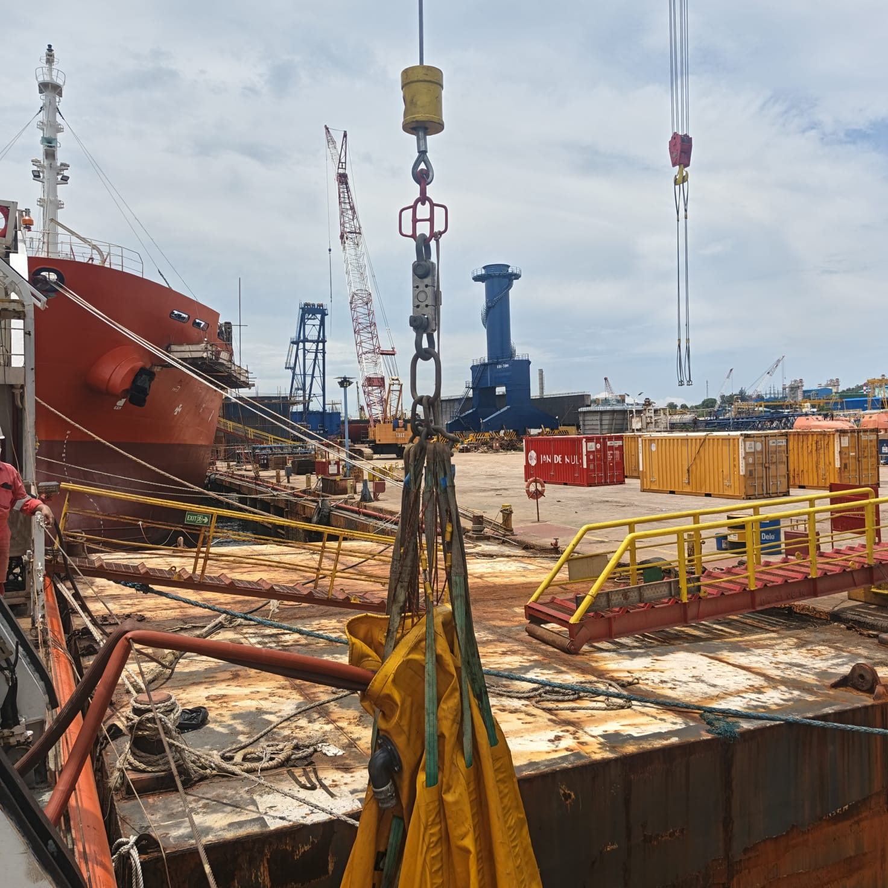

OUR SERVICES
Professional inspection, servicing and maintenance of lifeboats and related lifesaving equipment.

LIFEBOAT SERVICE
Citra Marine Services International provides inspection, servicing and maintenance for lifeboats and related lifesaving equipment onboard vessels.
Our service focuses on the condition and operational readiness of lifeboats, launching appliances and associated safety equipment.
WHAT WE PROVIDE
Inspection and servicing of lifeboats to support their operational readiness and safety.
Inspection of launching appliances and related components used for lifeboat launching operations.
Checking davit, winch and associated mechanical components for proper operational condition.
Load testing of lifeboat launching appliances, davits, winches and related components to verify operational performance and safety.
Inspection of lifeboat engine, steering system and related operational components.
Inspection of essential safety and survival equipment installed inside the lifeboat.
Inspection and maintenance of emergency and safety equipment supporting lifeboat operations.
Maintenance and repair of lifeboat components and related equipment to support safe operation.
Issuance of service certificates based on the inspection and service data of the lifeboat and related equipment.
OUR WORK








SAFETY & COMPLIANCE
Lifeboat inspection and servicing are carried out according to applicable marine safety requirements and relevant servicing procedures.
Contact Citra Marine Services International for inspection and servicing requirements.
CONTACT US